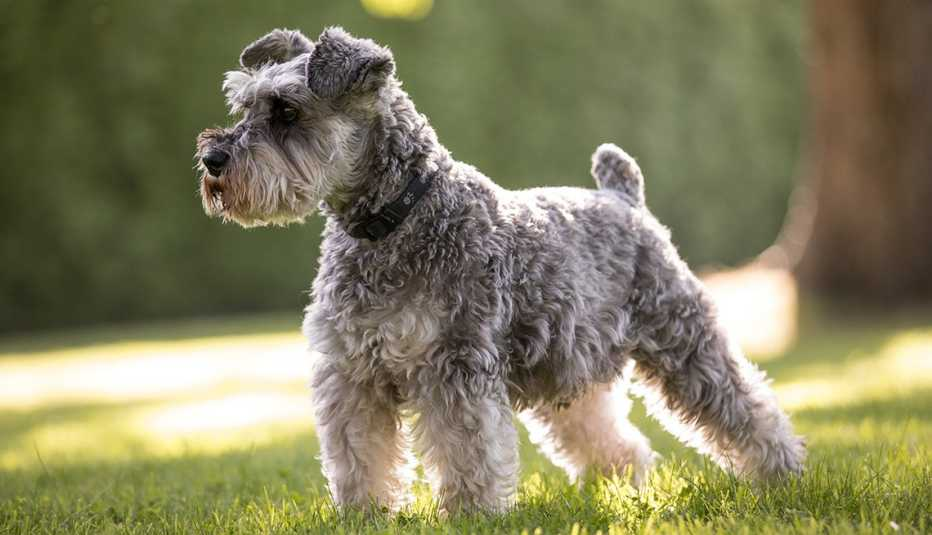
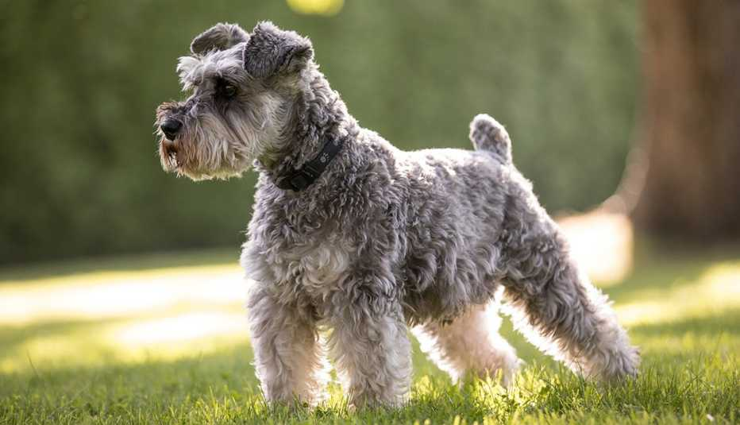

Publicación de Muñeca
Hoy compartimos un paseo increíble en el parque.

Ubicación: Heredia, Costa Rica
Descripción: Amante de los animales, compartiendo momentos con ellos.
Hoy compartimos un paseo increíble en el parque.
Tengo los ojos mas hermosos.